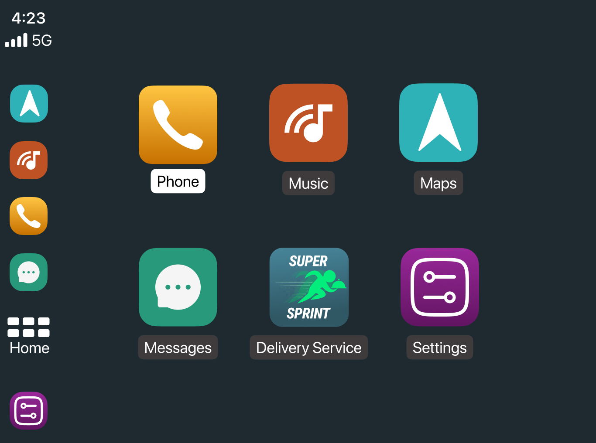
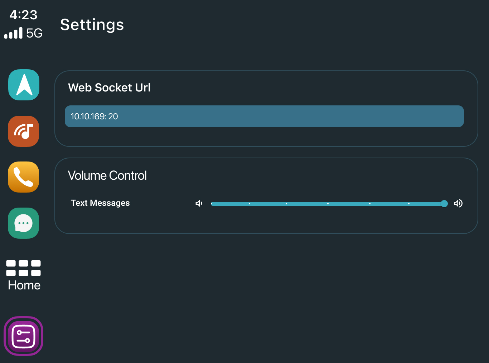
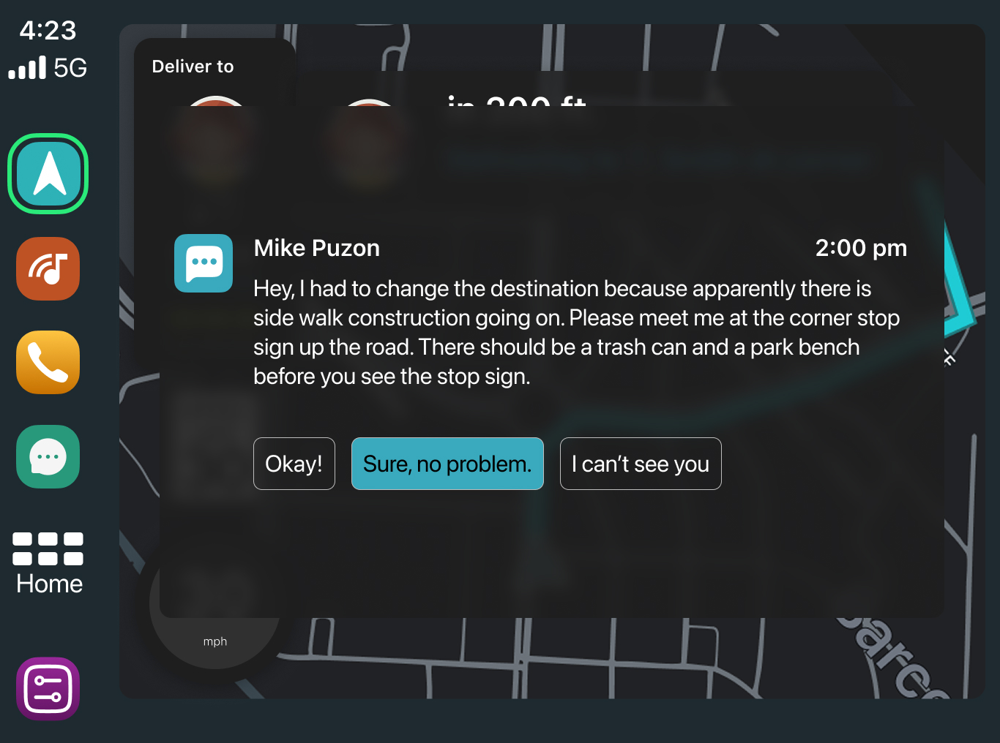
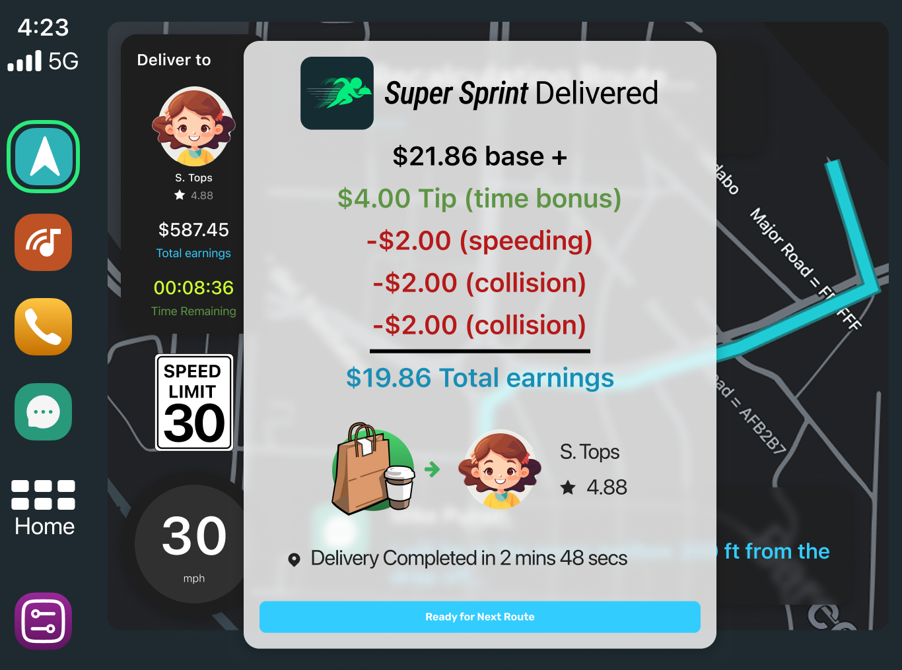
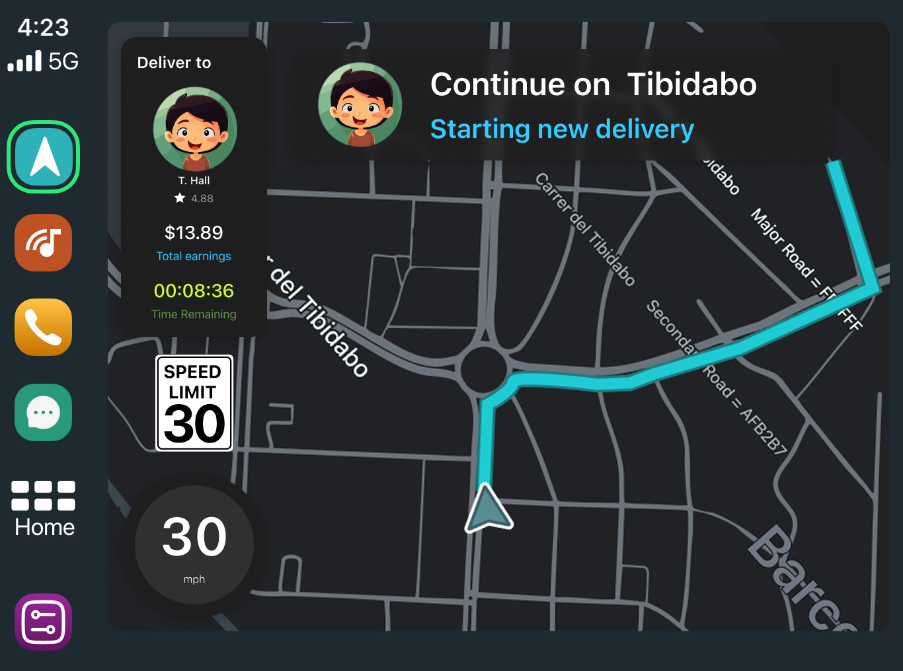
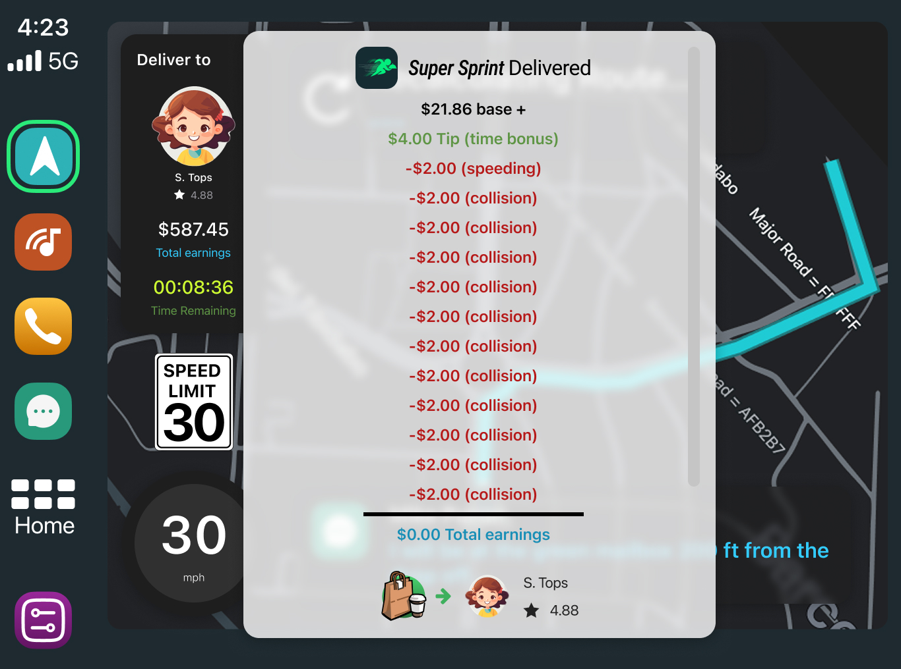

Navigation Map
A custom map based on the CARLA Simulator Town 15 layout, rendered as an SVG and updated in real time via ROS messages to reflect the car's current position and heading. Since the map doesn't exist in the real world, position data comes entirely from the simulator.
Music Player
A local music player that plays audio files stored on the device, surfacing familiar CarPlay-style media controls as a source of distraction during the drive.
Notification Alerts
Simulated incoming text message notifications that appear at scripted moments during the session, mimicking the kind of real-world phone interruptions the study is designed to test.
Pre-Study Video
Before the drive begins, participants watch a YouTube video — used to deliver study instructions or context directly within the app.
Post-Study Survey
At the end of the session, the app automatically forwards participants to an external survey URL to capture their self-reported experience.
CARLA Town 15
The map is dynamically drawn from CARLA Simulator Town 15 — a fictional environment that doesn't correspond to any real-world location. The road network is exported as an SVG and rendered within the app, with manual updates applied as the study evolves.
ROS Integration
The car's position on the map and the map's heading/orientation are updated in real time via ROS (Robot Operating System) messages published by the driving simulator. This keeps the on-screen navigation in sync with where the participant is virtually driving.





